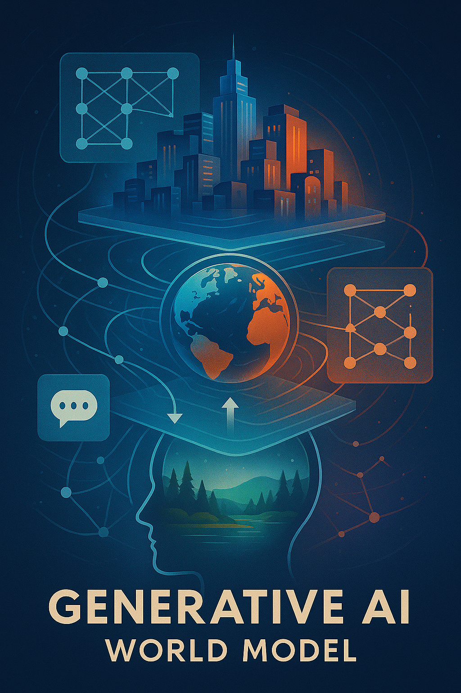
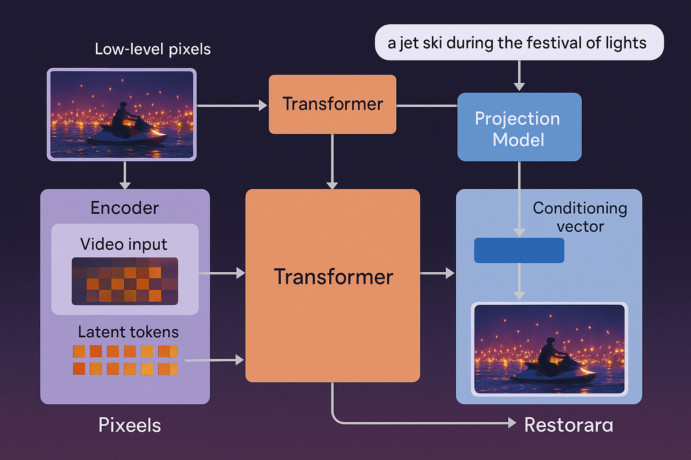
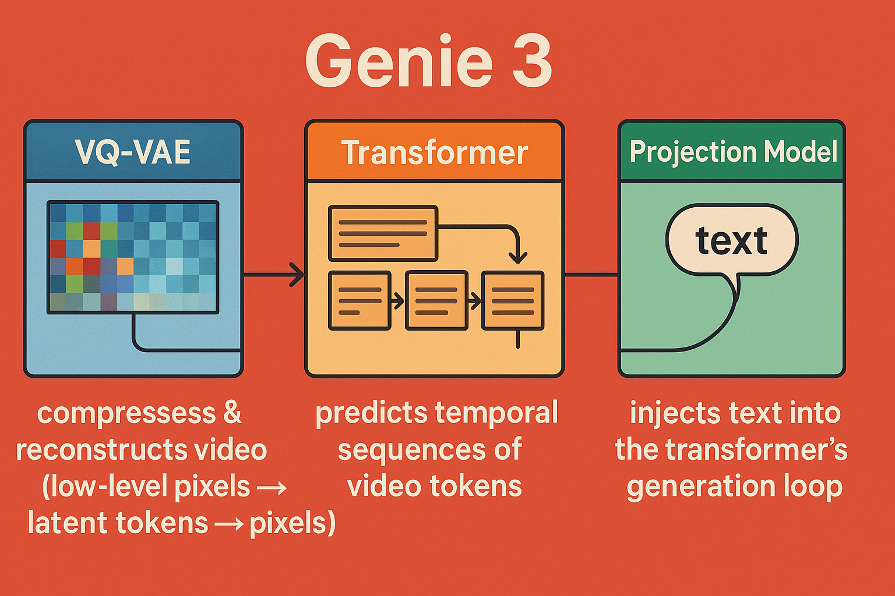

Introduction
🌐 What is a Large World Model?
A Large World Model (LWM) is a generative AI system designed to internally represent and simulate a persistent, coherent, and interactive virtual environment over extended timeframes. Unlike traditional video or game engines, LWMs aim to learn the dynamics of objects, agents, and events directly from data, rather than relying on hardcoded rules.
Key characteristics:
Unified Modality Representation: Combines visual, auditory, and temporal signals into a single, learnable latent space.
Persistent Memory: Tracks states of objects, characters, and the environment across multiple scenes or interactions.
Causal Reasoning & Dynamics: Supports cause-effect relationships, agent interactions, and physics-like behaviors.
Generative Interactivity: Can produce new, contextually appropriate sequences of events in response to user input or evolving conditions.
Scalable Architecture: Designed to handle high-resolution, long-duration simulations, often leveraging transformers, diffusion models, or hybrid architectures.
In short, a large world model is a data-driven simulation engine that seeks to “understand” and generate a virtual world with continuity, agency, and emergent behavior—far beyond what current video generation models or static scene generators can do.
Genie 3 is a three-model unit developed by DeepMind that focuses on interactive cinematic video generation. Unlike conventional video generation models that produce short, standalone clips, Genie 3 aims to create dynamic, navigable worlds where users can influence events in real time. Its design combines multiple specialized components—text encoding, video modeling, and interaction handling—into a single system to generate rich, temporally coherent environments.
The model matters because it represents a step toward AI-generated interactive video, a domain that blends cinematic quality with real-time responsiveness. While current state-of-the-art models like Veo 3 or Sora excel at producing short, visually impressive clips, Genie 3’s promise is to integrate narrative continuity, multi-agent interactions, and episodic memory, pushing closer to a fully interactive cinematic experience.
🧩 Analogy: Like a Deep Learning LEGO System
Imagine Genie 3 as a LEGO system of pretrained pieces:in total genie 3 is composed of 3 seperate modles that work together
• VQ-VAE = compression/decompression bricks
• Transformer = logic + generation brick
• Action embeddings = steering knobs
• The final “model” is really the blueprint connecting all of these
Two Transformer-modles: Action embedding transformer → encodes/control embeddings for desired actions. Sequence transformer → predicts latent video tokens over time, modeling temporal and causal structure.
VQ-VAE → decodes those latent tokens into video frames.
⸻
⸻
It’s analogous to a diffusion model without the Gaussian noise step:
Instead of progressively denoising random noise into an image/video, the transformer predicts the latent tokens directly in sequence. The VAE reconstructs frames from those tokens.
⸻
⸻
model 1️⃣ VQ-VAE (Vector Quantized Variational Autoencoder)
3D Convolution Layer in Genie 3’s VQ-VAE
What it is:
A generalization of standard 2D convolutions used in image CNNs.
Instead of sliding a 2D filter across height × width, a 3D filter slides across height × width × time.
This makes it ideal for video, since it captures both spatial features (edges, shapes, textures) and temporal features (motion, frame-to-frame changes).
⸻
⚙️
Core Components
3D convolutional layers
Filters (Kernels):
Small learnable weight tensors, e.g. size (3 × 3 × 3) covering 3 frames, 3 pixels high, 3 pixels wide.
Each filter detects a spatiotemporal feature (like “an edge moving left over 3 frames”).
Stride:
Controls how far the filter moves each step in time and space.
A stride of (2,2,2) halves temporal and spatial resolution, compressing data.
This is crucial to shrink down huge video inputs into manageable latent tokens.
Padding:
Adds extra pixels/frames at the edges so dimensions stay consistent.
Without padding, temporal/spatial size would shrink too aggressively.
Ensures the model doesn’t “forget” border information in a video.
Channels:
The output depth dimension.
Early layers: capture low-level motion edges and textures.
Deeper layers: capture higher-level patterns, like moving objects or background shifts.
- 🔎
Residual Blocks (ResBlocks)
What it is:
A module that lets the network learn corrections to the input instead of trying to map input → output directly. Core idea from ResNet: skip connections that pass the input forward unchanged and add the transformed features on top. In Genie 3, these are stacked after 3D convolution layers to deepen the network without destabilizing training.
⸻
⸻
⚙️ model 2:
Core Components of the transfomer model:
Embedding Layer
Takes discrete VQ-VAE tokens (compressed video frames) and maps them to continuous vectors. Each vector has a fixed dimensionality (say, 1024). Purpose: Converts raw latent codes into a form the transformer can manipulate.
vetcors are simply coorindates inside a high dimensional latent space each observation is given a discreet place in the latent space based on how similar it is to other observations
videos with similar frames and audio are close to eachother as embedded vectors
Positional Encoding
Video is sequential: order matters. Adds either sinusoidal or learned positional embeddings to the token vectors. Purpose: Allows the transformer to know which frame or token comes first, second, etc., capturing temporal relationships.
LayerNorm (pre-attention)
Normalizes each token’s vector to have mean 0 and variance 1. Purpose: Stabilizes training and prevents gradient explosion/vanishing in deep transformer stacks.
Multi-Head Self-Attention (MHSA)
Each token “looks at” all other tokens in the sequence to figure out relationships. Multi-head means several attention maps in parallel, allowing the model to focus on multiple patterns at once: Motion patterns between frames Object relationships Audio-visual correlations
Purpose: Captures long-range dependencies and ensures coherent temporal dynamics across frames.
Residual Connection (Attention)
Adds the original input back to the output of attention: = + Purpose: Helps gradient flow through deep layers and preserves low-level token information.
LayerNorm (pre-FFN)
Another normalization step before the feed-forward network. Purpose: Keeps numerical stability as the network processes each token individually through dense layers.
Feed-Forward Network (Dense Layers)
Two or more dense layers with GELU in between. Purpose: Refines each token independently, extracting patterns or features not captured in attention: Temporal embeddings Frame-level semantic patterns Action/event representations
Residual Connection (FFN)
Same as attention residual: adds input back after FFN. Purpose: Stabilizes training, preserves features from previous layers, and prevents over-smoothing of features which prevents loss of any relavant feature.
Softmax
Applied inside attention: converts attention scores into probabilities (weights). Purpose: Determines how much each token should influence the others when computing the next frame.
GELU Activation
Nonlinear function inside FFN: smoother than ReLU. Purpose: Introduces nonlinearity so the network can model complex spatiotemporal interactions.
💡 How this all ties to video generation:
The transformer operates on sequences of latent video tokens. Self-attention allows it to plan frames across time. FFNs + residuals refine features for each token, making each frame consistent with the global context. Cross-attention (if used with action embeddings) conditions the video on specific behaviors or instructions.
⸻
⸻
🧠
Why It Matters in Genie 3
Videos are extremely rich and high-dimensional, so deep networks are required to extract meaningful embeddings. ResBlocks allow stacking many layers without training collapse. They refine the 3D conv features, capturing subtle motions, object interactions, and temporal consistency.
⸻
⸻
model 3:
Action / Projection Model
Purpose:
The projection model in Genie 3 acts as the bridge between textual prompts and the video generation process. Its main job is to translate the user’s instructions — written as natural language — into a representation the generative models (transformer + VQ-VAE) can act on. Essentially, it answers the question: “Given this text, how should the video behave?”
How it works:
Embedding & Positional Encoding: Converts words into vectors (embeddings). Adds positional information so the model understands word order and sentence structure.
Cross-Attention Mechanism: Video tokens (from the VAE latent space or transformer intermediate layers) query the text embeddings. The attention layers determine which parts of the text are relevant for generating each video frame or segment. This ensures that the generated video is semantically aligned with the user’s prompt.
Residual & Normalization Layers: Maintain gradient stability and preserve lower-level features, preventing the text conditioning from destabilizing the generation.
End result:
The text influences the video at every step in a smooth, controlled way. Users can guide character actions, scene changes, camera angles, or events interactively. Without this alignment, the video generation would drift from the user’s intent, producing incoherent or irrelevant frames.
🧠
Why It Matters in Genie 3
Video isn’t just a stack of images — it has causal temporal dynamics. 3D convolutions let Genie 3 embed short-term motion patterns into its latent space. This gives the later Transformer a temporal-aware representation rather than flat images.
Full Genie 3 forward pass for both training and inference:
🧩 Core Model 1: VQ-VAE (Video Tokenizer)
Purpose:
The VQ-VAE (Vector Quantized Variational Autoencoder) is the compression + decompression engine for video. Raw video is far too heavy to feed into a transformer directly. The VQ-VAE reduces high-dimensional video into a sequence of discrete tokens (like a learned “video vocabulary”) while preserving temporal and spatial structure.
How it works
Encoder (Compression)
3D Convolutional Layers:
Process video both spatially (height × width) and temporally (frames), capturing motion and structure.
Striding & Padding:
Reduce resolution and stabilize feature maps.
Residual Blocks + GroupNorm + GELU:
Add depth, normalize activations, and introduce nonlinearity for richer features.
Time Projection Layer:
A linear MLP layer + normalization that aligns temporal information across frames, crucial for consistency in video.
Result → A compressed latent representation of the video.
Vector Quantization
Each latent vector is replaced with the closest entry from a learned codebook (like snapping to the nearest LEGO block).
This discretization makes it possible to later model video with a transformer as a sequence of tokens.
Decoder (Decompression)
Mirrors the encoder with transposed 3D convolutions.
Reconstructs full video frames from the quantized latent sequence.
Result → High-dimensional video reconstructed from compact tokens.
Role in Genie 3
Provides the tokenized building blocks of video that the transformer operates on.
Ensures that temporal continuity (motion, frame order) and spatial detail (textures, objects) survive compression.
Without this step, transformers would choke on the sheer size of raw video data.
✅ That’s the VQ-VAE fully covered: encoder, quantizer, decoder.
Core Model 2: Transformer (Generative Sequencer)
Purpose:
The transformer is the generative controller. Once the VQ-VAE compresses video into discrete tokens, the transformer predicts the next token sequence — essentially deciding what the next frame (or action-conditioned variation) should look like.
Core Layers of the Transformer
We can think of it as a stack of repeating blocks. Each block has two main parts: attention and feed-forward processing.
Embedding Layer
Converts discrete video tokens (from the VQ-VAE codebook) into continuous dense vectors. Embeddings capture semantic meaning — e.g., “edge motion here” or “object texture there.”
Positional Encoding
Since transformers have no built-in sense of order, positional encodings inject temporal order (frame sequence) and spatial order (x,y position). Genie 3 uses learned positional embeddings (trainable vectors), not just sinusoidal ones.
LayerNorm
Normalizes activations before each major sub-block, stabilizing training.
Multi-Head Self-Attention (MHSA)
Each frame token attends to all other tokens in the sequence. Multi-head structure lets the model learn different types of dependencies: Head 1 might track object motion across frames Head 2 might focus on texture consistency Head 3 might ensure background stability
This is what allows coherent temporal and spatial continuity in generated video.
Residual Connection
Adds the input back to the output of attention (skip connection). Helps prevent vanishing gradients and preserves signal.
Feed-Forward Network (FFN)
Two linear layers with a GELU nonlinearity in between. Expands embedding dimension (like widening the feature space) and projects it back. Captures non-linear interactions between tokens.
Residual Connection (again)
Adds skip connection around the FFN.
Stacking
Genie 3 uses dozens of these layers (the exact depth depends on the training run). Each layer builds higher-level abstractions: Low layers = raw motion/edges Mid layers = objects, textures High layers = dynamics, interactions
Output
After passing through the transformer stack, the output is a predicted sequence of video tokens. These are passed to the VQ-VAE decoder, which reconstructs actual video frames.
Role in Genie 3
The transformer is where generation happens. It “imagines” the next steps by predicting the evolution of video tokens. It’s also where action embeddings and later text embeddings (via projection model) are injected to steer generation.
✅ That’s the transformer broken down.
Next up would be the projection model, which aligns text ↔︎ video so the transformer knows how to respond to prompts.
⸻
⸻
🧩 Core Model 3: Projection (Text–Video Alignment)
Purpose:
The projection model ensures that what the transformer generates in video tokens actually matches the user’s text prompt or control signal.
Example: If the user types “a bouncing red ball”, the projection model aligns the text embeddings (“red,” “ball,” “bouncing”) with the video token embeddings that describe color, shape, and motion.
How It Works
Text Encoding The input text prompt is first encoded (often by a pretrained text encoder like T5 or CLIP’s text tower). This produces text embeddings: vectors that capture meaning at the word/phrase level.
Projection Layer These text embeddings don’t live in the same space as the video embeddings. A linear projection layer (MLP) transforms the text embedding into the video token space. Think of it like translating between two languages so both can “talk” to the transformer.
Cross-Attention Inside the transformer blocks, cross-attention layers allow video tokens to attend to text tokens. Mechanism: Queries = video embeddings Keys & Values = projected text embeddings
This means video token predictions are conditioned on language. Example: When predicting the next frame, the transformer “checks in” with the text embedding to ensure the generated video aligns with the description.
Residual & Normalization As with self-attention, residual connections and group/layer normalization stabilize the training process.
Role in Genie 3
The projection model is the conditioning system. Without it, the transformer would just generate arbitrary videos from prior patterns. With projection + cross-attention, Genie 3 can: Generate videos aligned with text prompts Ensure long-term coherence (the ball stays red, the cat keeps walking) Enable interactive video phenomena — since new text can shift the generative process mid-sequence.
✅ So now we’ve covered all 3 models that compose genie 3:
VQ-VAE (encoder/decoder with 3D convolutions) Transformer (sequencer/generator) Projection model (text–video alignment via cross-attention)


However, there’s a gap between hype and reality. While demos showcase impressive capabilities, Genie 3 remains computationally heavy, limited in generalization, and structurally inefficient due to its multi-model setup. Its potential is significant, but the system is far from a fully realized, scalable solution for interactive video generation.
Why Genie 3 Is Not a True World Model
Despite claims of being an “interactive cinematic world model,” Genie 3 does not simulate a dynamic world. What it offers is essentially a frozen environment: a static canvas of video frames through which a user can navigate. There are no underlying physics, no autonomous agent behavior, no time progression, and no meaningful cause-and-effect. Objects do not interact, characters do not respond, and user actions have no impact on the environment. While impressive visually, this is fundamentally different from a true world model, which requires at least basic dynamics, entity interaction, and temporal evolution. Genie 3 demonstrates navigable video, not an actual simulated world.
Why Genie 3 Is Not a Proof of Concept
A true proof-of-concept demonstrates the essential principles of what it claims to be. For a “world model,” this would mean showing at least minimal dynamics: objects interacting according to physical laws, agents responding to the environment, time progression, or cause-and-effect from user actions. Genie 3 does none of this. It presents a static visual space with limited navigable viewpoints. There is no underlying simulation of the world, no emergent behaviors, and no meaningful interaction beyond pre-rendered video frames. Therefore, despite its visual polish, it cannot be considered a proof-of-concept for a general world model.
Genie 3’s current design—three separate models (two transformers plus a VQ-VAE) loosely connected via action embeddings—is highly inefficient. Each component has to operate independently, requiring extra computation and making end-to-end optimization nearly impossible. This fragmentation limits real-time performance, coherence, and scalability.
Looking forward, truly large-scale world models will likely adopt a unified transformer architecture. By integrating compression, sequence modeling, and action conditioning into a single training graph, such a design would allow seamless temporal and causal modeling, fully differentiable end-to-end training, and far greater efficiency in generating complex, interactive worlds. This is the direction that next-generation interactive and cinematic AI systems must take to move beyond the current limitations of Genie 3.
Limitations: While Genie 3 pushes the boundaries of what world models can accomplish, it’s important to acknowledge its current limitations:
Limited action space. Although promptable world events allow for a wide range of environmental interventions, they are not necessarily performed by the agent itself. The range of actions agents can perform directly is currently constrained. Interaction and simulation of other agents. Accurately modeling complex interactions between multiple independent agents in shared environments is still an ongoing research challenge. Accurate representation of real-world locations. Genie 3 is currently unable to simulate real-world locations with perfect geographic accuracy. Text rendering. Clear and legible text is often only generated when provided in the input world description. Limited interaction duration. The model can currently support a few minutes of continuous interaction, rather than extended hours.
⸻
🔸 Video’s Richness Comes at a Cost
Video is the most information-dense modality — combining space, time, motion, and sound — which makes it the ideal training ground for world modeling. But that same richness makes it the hardest to model. The input dimensions of video (especially with high resolution, long duration, and audio) are massive.Even state-of-the-art generative models like Sora and Veo 3 can only produce video in short bursts — typically under one minute — before quality degrades or coherence breaks.Why? Because the computational demands of processing and generating high-fidelity video over time are still immense. Training on video is also harder: unlike static images, video requires modeling temporal continuity, physical realism, and synchronized audio — all within an enormous latent space. Video is where AI learns the structure of reality — but it’s also where today’s models hit their computational limits. That richness is exactly what makes video the ideal domain for video generation and world modeling — but also the hardest to generate.Which is why p predict it will be the slowest of the 3 state of the art modalities in advancment.
⸻
The Future of Large World Models: Beyond Genie 3
While Genie 3 demonstrates interesting advances in interactive video generation, it is ultimately a set of disconnected models generating static, navigable scenes rather than a true dynamic world. Its inefficiencies and architectural limitations highlight the gap between current capabilities and the vision of a fully realized world model.
The next generation of large world models will be unified, end-to-end differentiable architectures, likely centered around transformer-based designs. By integrating compression, temporal modeling, action embeddings, and generative prediction into a single network, these models can optimize all components simultaneously, reducing redundancy and improving coordination.
Key characteristics of these future models include:
- Unified Architecture
Instead of multiple disconnected models, everything—compression, temporal modeling, action embedding, and generative prediction—will be integrated into a single transformer-based architecture. End-to-end differentiability allows better optimization, faster training, and tighter coordination between all components.
- Temporal and Spatial Coherence
Unlike Genie 3’s static scenes, future models will maintain long-range memory across episodes, characters, and objects. Learned physics and environment rules will enable objects to interact naturally, agents to respond to events, and worlds to evolve over time, producing truly dynamic simulations.
- Multi-Agent Intelligence
Agents and characters will have persistent goals, emotional states, and social behaviors. Interactions between multiple entities will emerge organically from the model’s learned representations, enabling realistic social dynamics and cooperative/competitive behaviors.
- Cross-Modal Fusion
All sensory streams—video, audio, text, and possibly more—will be embedded into a unified latent space. This allows models to generate temporally and causally coherent audiovisual outputs conditioned on user input, bridging narrative, visual, and auditory coherence in ways that isolated models cannot.
- Efficiency and Scalability
Advanced routing techniques, such as Mixture-of-Experts (MoE) or hierarchical attention, will allow extremely deep and wide models without prohibitive compute costs. Compression techniques like VQ-VAE will be integrated rather than separate, further reducing inefficiency.
- Real-Time Interactive Worlds
These models will support genuinely interactive, persistent worlds. Users can navigate and manipulate environments where physical dynamics, agent behaviors, and environmental changes respond realistically. This opens doors to cinematic-quality content generation, dynamic games, scientific simulations, and embodied AI applications in robotics and autonomous systems.
🌐 Future Applications of Advanced World Models
As unified, end-to-end world models mature, their potential extends far beyond simple video generation. Key application areas include:
- Fully Interactive Entertainment
Real-time, AAA-quality game worlds with dynamic storylines, persistent characters, and adaptive environments. Procedurally generated movies or interactive narratives where viewers influence plots, dialogue, and character actions. Personalized cinematic experiences adapting pacing, music, and dialogue for maximum emotional impact.
- Education and Training
Immersive simulations for medicine, aviation, disaster response, and other high-stakes training scenarios. Personalized virtual classrooms and labs where students interact with intelligent agents in rich, evolving environments.
- Scientific Visualization and Simulation
Visualizing complex phenomena such as climate models, molecular dynamics, or social behavior with causal fidelity. “What-if” scenario testing in virtual worlds to accelerate research and policy decisions.
- Virtual Social Spaces and Collaboration
Persistent virtual environments for social interaction, remote collaboration, and events. AI-driven avatars capable of reasoning, conversing, and responding to users in real time.
- Hybrid Utility and Entertainment Applications
Mixed reality overlays blending digital simulations with the physical world. Virtual companions, co-pilots, and assistants embedded within cinematic or interactive environments.
Key Enabler: These applications depend on the model’s ability to integrate multiple modalities (video, audio, text), maintain long-term memory of agents and scenes, simulate causal dynamics, and generate coherent, temporally stable outputs. While current models like Genie 3 hint at these possibilities, fully realized world models will require unified transformer-based architectures with advanced memory and attention mechanisms.